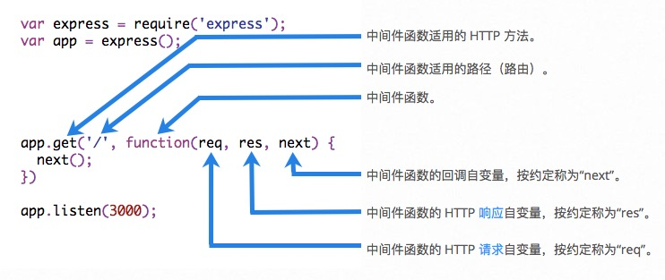

编写中间件以用于 Express 应用程序
概述
中间件函数能够访问请求对象 req、响应对象res 以及应用程序的请求/响应循环中的下一个中间件函数。下一个中间件函数通常由名为 next 的变量来表示。
中间件函数可以执行以下任务：
- 执行任何代码。
- 对请求和响应对象进行更改。
- 结束请求/响应循环。
- 调用堆栈中的下一个中间件。
如果当前中间件函数没有结束请求/响应循环，那么它必须调用 next()，以将控制权传递给下一个中间件函数。否则，请求将保持挂起状态。
以下示例显示中间件函数调用的元素：

以下是Hello World Express 应用程序的简单示例，将为其定义两个中间件函数：
var express = require('express');
var app = express();
app.get('/', function (req, res) {
res.send('Hello World!');
});
app.listen(3000);
开发
以下是称为myLogger的中间件函数的简单示例。此函数仅在应用程序的请求通过它时显示LOGGED。中间件函数会分配给名为myLogger的变量。
var myLogger = function (req, res, next) {
console.log('LOGGED');
next();
};
请注意以上对
next()的调用。调用此函数时，将调用应用程序中的下一个中间件函数。next()函数不是Node.js或 Express API 的一部分，而是传递给中间件函数的第三自变量。next()函数可以命名为任何名称，但是按约定，始终命名为“next”。为了避免混淆，请始终使用此约定。
要装入中间件函数，请调用 app.use() 并指定中间件函数。 例如，以下代码在根路径 (/) 的路由之前装入 myLogger 中间件函数。
var express = require('express');
var app = express();
var myLogger = function (req, res, next) {
console.log('LOGGED');
next();
};
app.use(myLogger);
app.get('/', function (req, res) {
res.send('Hello World!');
});
app.listen(3000);
应用程序每次收到请求时，会在终端上显示消息LOGGED。
中间件装入顺序很重要：首先装入的中间件函数也首先被执行。
如果在根路径的路由之后装入 myLogger，那么请求永远都不会到达该函数，应用程序也不会显示LOGGED，因为根路径的路由处理程序终止了请求/响应循环。
中间件函数 myLogger 只是显示消息，然后通过调用 next() 函数将请求传递到堆栈中的下一个中间件函数。
下一个示例将名为 requestTime 的属性添加到请求对象。我们将此中间件函数命名为requestTime。
var requestTime = function (req, res, next) {
req.requestTime = Date.now();
next();
};
现在，该应用程序使用 requestTime 中间件函数。此外，根路径路由的回调函数使用由中间件函数添加到 req（请求对象）的属性。
var express = require('express');
var app = express();
var requestTime = function (req, res, next) {
req.requestTime = Date.now();
next();
};
app.use(requestTime);
app.get('/', function (req, res) {
var responseText = 'Hello World!';
responseText += 'Requested at: ' + req.requestTime + '';
res.send(responseText);
});
app.listen(3000);
您向应用程序根发出请求时，此应用程序当前在浏览器中显示请求的时间戳记。
因为您拥有请求对象、响应对象、堆栈中的下一个中间件函数以及整个 Node.js API 的访问权，所以中间件函数的可能性是无穷的。
有关 Express 中间件的更多信息，请参阅：使用Express中间件。
原文來自: express官方文檔

微信打賞

支付寶打賞